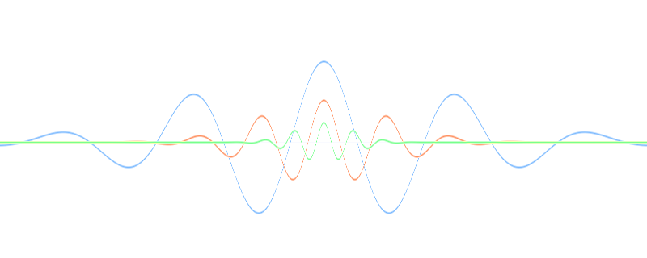

Pulsar synthesis builds sound from a stream of tiny wave fragments called pulsarets. Each pulsaret is brief, periodic, and can be morphed to create very different timbres.
Spaluter shapes each pulsaret with a window, which controls the grain envelope, and a duty value, which sets how much of each cycle is active versus silent.
By sweeping pulsaret waveform, window type, pitch/formants, and texture controls, you move between pitched tones, vocal-like spectra, and noisy granular textures while keeping a rhythmic pulse structure.
Credits: Spaluter’s pulsar synthesis direction is inspired by Curtis Roads’ foundational work in granular and microsound composition.
Curtis Roads source material: